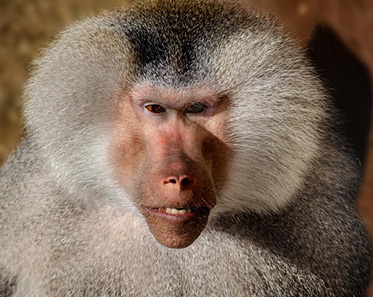

Mantolu pavian (Papio hamadryas), Afrika’nın doğu bölgeleri ile Arap Yarımadası’nda yaşayan ve özellikle erkeklerinin gümüş renkli uzun tüyleriyle tanınan bir primat türüdür; güçlü sosyal yapılarıyla dikkat çeken bu maymunlar, harem düzenine dayalı karmaşık hiyerarşiler içinde yaşar, erkekler dişiler ve yavrulardan oluşan grupları yönetirken topluluk halinde hareket ederek hem beslenme hem de korunma açısından dayanışma sergiler. Ortalama 30 yıl yaşayabilen mantolu pavianlar, meyve, yaprak, kök, böcek ve küçük hayvanlarla beslenir, kayalık ve yarı çöl bölgelerinde gündüz aktif olup gece topluca uyurlar; Uluslararası Doğa Koruma Birliği (IUCN) tarafından “Asgari Endişe” kategorisinde sınıflandırılsalar da habitat kaybı, tarım alanlarının genişlemesi ve insanlarla çatışmalar nedeniyle yerel popülasyonları risk altındadır.